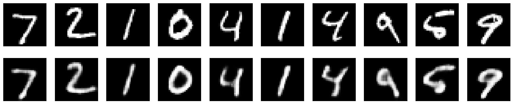
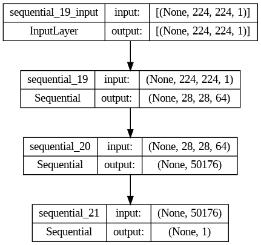
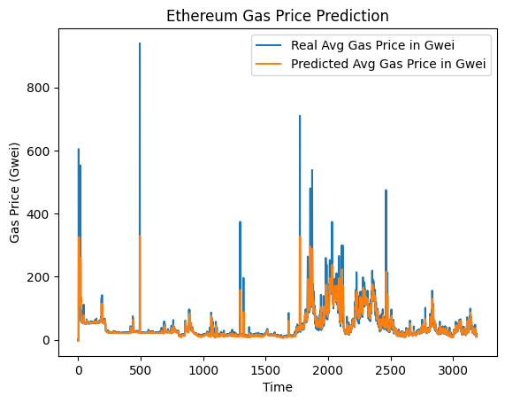

My Research
My research delves into machine learning and its applications. Below are some highlights of my recent reserach:
Machine Learning and Natural Language Processing Approach for Energetic Materials
Conducted research on applying machine learning and natural language processing techniques for the discovery of energetic materials. Responsibilities included multi-modal data processing, model development, and performance evaluation.
Projects
My projects, predominantly written in Python, have been instrumental in honing my machine learning skills and understanding its practical implementations. Here are a few noteworthy projects:
Weighted Average Cost of Capital Calculator
Developed a tool to calculate the WACC of a business intended to be used in a discounted cash flow model.
Amortization Table
Created an application to generate amortization tables for loans, making it easier for users to understand their loan repayment schedules.
Dividend Discount Model
Translated financial DDM model to python to analyze the present value of expected future dividends.
Portfolio Optimization App
Utilizes Variance (Minimum, Mean), Monte Carlo Analysis, Correlation Matrix, Rolling Volatility, and Efficient Frontier to optimize investment portfolios.
Generative Sentiment Analysis for Earnings Calls and Reports
Implemented an AI-based sentiment analysis tool using chatGPT requests to generate sentiment about a company's recent earnings report and call transcript.
Basic Ethereum Trading Bots
Developed bots that utilize both on-chain and off-chain components to determine profitable arbitrage opportunities using flash loans. Written with solidity for on-chain and python for off-chain.
Forex Trading Bot
Currently developing a bot using technical analysis and API calls to the Oanda broker for automated forex trading.
Autoencoder for Handwritten Digits (MNIST)
Designed and trained a basic autoencoder on the mnist dataset to generate handwritten digits.
Feed Forward Neural Network
Built a basic neural network for various predictive tasks.
Convolutional Neural Network
Created a CNN to predict Total Solar Irradiance of the Sun, whereby I used a CNN to perform a regression task.
Flappy Bird Reinforcement Learning
Developing an RL agent to play Flappy Bird, exploring reinforcement learning techniques.
Long Short-Term Memory Network
Applied LSTM to predict Bitcoin and Ethereum gas prices, showcasing the application of recurrent neural networks in finance.
Language Model Crossover Project
Utilized few-shot prompting to create generative models for code, text, and images, demonstrating the versatility of language models.